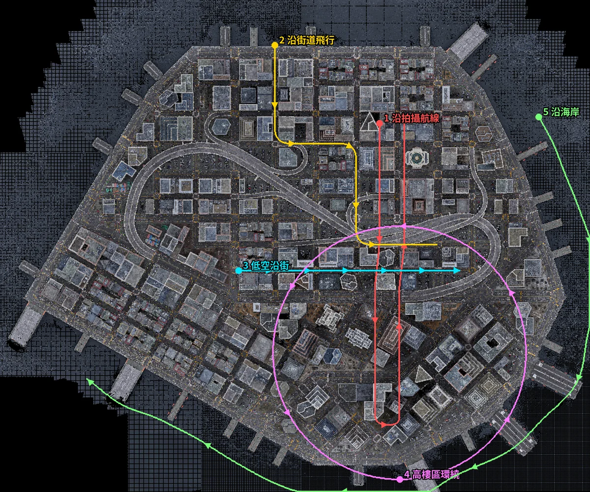

MatrixCity · 2D Gaussian Splatting
輕量、快速的大規模 2D 高斯場景重建

手機橫放看得更清楚。
| 方法 | 硬體 | 訓練時間 ↓ | 訓練顯存 ↓ | PSNR ↑ | SSIM ↑ | LPIPS ↓ | F1 ↑ |
|---|---|---|---|---|---|---|---|
| CityGaussianV2 （論文） | 8 × A100 | 3.0 小時 | 14.8 GB | 27.23 | 0.857 | 0.169 | — |
| CityGaussianV2 （同卡重跑） | 1 × RTX 3090 | 71.2 小時 | 12～21 GB | 27.26 | 0.867 | 0.154 | 0.597 |
| HUG （ICCV 2025） | 8 × A6000 | — | — | 28.02 | 0.883 | 0.142 | — |
| 我們 | 1 × RTX 3090 | 1.33 小時 | 2.7 GB | 27.95 | 0.872 | 0.143 | 0.711 |
我們與 CityGaussianV2（同卡重跑）用同一支評測程式計算；標「論文」的列與 HUG 取自各自論文的表格。訓練時間是整個訓練任務的牆鐘時間，F1 是幾何準確度。